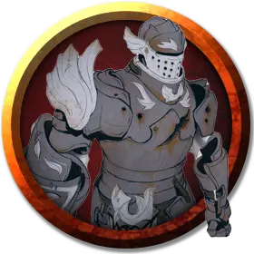

Пепельный оживленный доспех
Ashen Animated Armor
Средний Элементаль, законно-злой

Класс Доспеха 18 (природный доспех)
Хиты 33 (6к8 + 6)
Скорость 25 футов
| мод | спас | ||
|---|---|---|---|
| СИЛ | 14 | +2 | +2 |
| ЛОВ | 11 | +0 | +0 |
| ТЕЛ | 13 | +1 | +1 |
| мод | спас | ||
|---|---|---|---|
| ИНТ | 1 | −5 | −5 |
| МДР | 3 | −4 | −4 |
| ХАР | 1 | −5 | −5 |
Иммунитет к урону огонь, психическая энергия, яд
Иммунитет к состояниям глухота, испуг, истощение, окаменение, ослепление, отравление, очарование, паралич
Чувства слепое зрение 60 футов (слеп за его пределами), пассивное Восприятие 6
Опасность 1 (200 опыта)
Бонус мастерства +2
Особенности
Восприимчивость к антимагии. Доспех недееспособен, пока находится в пределах области преграды магии [antimagic field]. Став целью рассеивание магии [dispel magic], доспех должен преуспеть в спасброске Телосложения Сл спасброска заклинателя, иначе потеряет сознание на 1 минуту.
Пепельное существо. Когда хиты доспеха уменьшаются до 0, он превращается в груду пепла, а все снаряжение, которое он нёс или носил, падает на землю.
Обманчивая внешность. Пока доспех остаётся без движения, он неотличим от обычного комплекта доспехов.
Действия
Мультиатака. Доспех совершает две рукопашные атаки .
Удар. . Рукопашная атака оружием: +4 к попаданию, досягаемость 5 футов, одна цель. Попадание: 5 (1к6 + 2) дробящего урона.
Описание
Этот набор латных доспехов, оживленных магией, издает шум при движении, стучит и скрежещет, как мстительный дух павшего рыцаря.